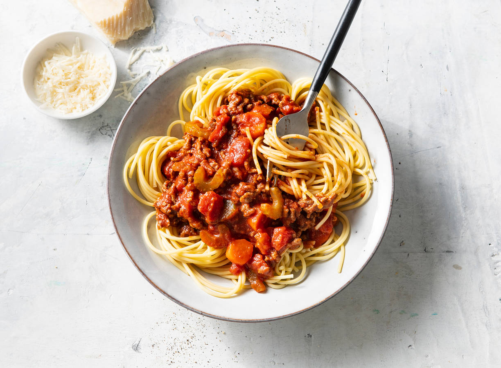

Ja, je leest het goed! Echt iedereen kan koken! Wij hebben de makkelijkste recepten voor
je op een rij gezet.
Als je je maar aan de recepten houd, is het echt niet moeilijk.
Recept 1
Spaghetti Bolognese

Welke ingrediënten heb je nodig?
- 500 gram rundergehakt
- blik tomatenblokjes 400 gram
- 2 teentjes knoflook
- 1 grote ui
- 2 EL gedroogde oregano
- 2 EL verse basilicum
- 250 gram spaghetti
- 50 gram tomatenpuree
- 50 gram Parmezaanse kaas
Stappenplan bereidingswijze
- Snijd de ui bak deze samen met de geperste knoflook in een met olie ingevette pan
- Bak het gehakt rul in dezelfde pan
- Voeg de oregano toe en roer goed door
- Voeg de tomatenpuree en tomatenblokjes toe en laat het 20 minuten doorpruttelen
- Kook ondertussen in 12 minuten de spaghetti gaar
- Serveer de spaghetti met het gehaktmengsel, geserveerd met Parmezaanse kaas